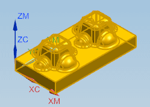
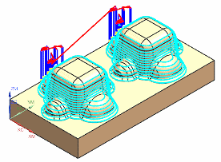

编辑 Zlevel 工序并重播刀轨
-
双击 ZLEVEL 以编辑该工序。
将打开 Zlevel 对话框。
-
在几何体组的指定部件行中，点击显示
 。
。整个部件都将高亮显示，表示它已被定义为部件几何体。

当前的切削顺序参数被设置为深度优先，这将使工序在加工下一个形状的轮廓之前完全加工出一个形状的轮廓，在这个练习中即为岛。
-
刷新图形窗口显示。
-
点击操作组中的重播
 。
。在加工右侧岛的轮廓之前将先加工左侧岛的轮廓。
